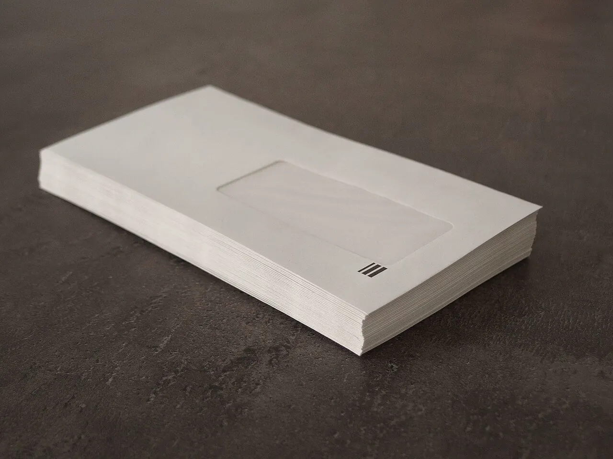

Bookkeeping for small businesses
We keep your books each month, file your VAT returns and send the quarterly Making Tax Digital updates that started on 6 April 2026.
Services for sole traders and small companies
Every service runs from one set of books, so each return agrees with the bank.
- BookkeepingBank lines matched to receipts and invoicesMonthly
- VAT returnsPrepared from the books, filed to HMRCQuarterly
- Making Tax DigitalUpdates for sole traders and landlordsFour a year
- PayrollPayslips, RTI submissions and pensionsEach payday
- Year-endClosed books and a trial balanceYearly
How a month of bookkeeping works
-
You send the paperwork for your books
Photograph receipts, forward invoices by email and share your bank statements whenever suits you.

-
We do the bookkeeping, line by line
Each bank line is matched to its receipt or invoice. Anything missing comes back to you as one list.
-
We file the return before the deadline
You see the figure and the due date first. Once you agree it, the return goes to HMRC.
Questions
What sole traders, landlords and company directors ask before they hand over their books.
Do I have to use Making Tax Digital for Income Tax?
Yes, if your self-employment and property income was over £50,000 in 2024–25. Over £30,000 joins on 6 April 2027, and over £20,000 on 6 April 2028.
What income counts towards the £50,000?
Your takings from self-employment and property added together, before expenses. Wages, pensions and dividends do not count.
How long do I keep my books?
Sole traders and landlords: five years after the 31 January deadline. Limited companies: six years from the end of the financial year.
When is a VAT return due?
One month and seven days after the VAT period ends. The payment is due on the same day.
What do you need to price my bookkeeping?
Roughly how many bank transactions you have a month, whether you are VAT registered and how many people you pay.
Tax deadlines for the year ahead
The dates HMRC sets for Self Assessment and Making Tax Digital, from January 2027.
- Self Assessment, 2025–26Online return and the tax owed31 Jan 2027
- Quarterly update6 October to 5 January7 Feb 2027
- Quarterly update6 January to 5 April7 May 2027
- Quarterly update6 April to 5 July7 Aug 2027
- Final declaration, 2026–27The year's figures and the tax due31 Jan 2028

Request a quote
Tell us what the business does and which services you need.